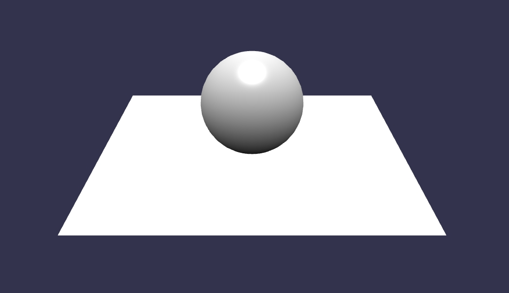

<!DOCTYPE html><html><head lang="en"><meta charset="UTF-8"><meta name="viewport" content="width=device-width, initial-scale=1"><title>BabylonJS Documentation</title><link rel="shortcut icon" href="http://www.babylonjs.com/img/favicon/favicon.ico"><link rel="apple-touch-icon" sizes="57x57" href="http://www.babylonjs.com/img/favicon/apple-icon-57x57.png"><link rel="apple-touch-icon" sizes="60x60" href="http://www.babylonjs.com/img/favicon/apple-icon-60x60.png"><link rel="apple-touch-icon" sizes="72x72" href="http://www.babylonjs.com/img/favicon/apple-icon-72x72.png"><link rel="apple-touch-icon" sizes="76x76" href="http://www.babylonjs.com/img/favicon/apple-icon-76x76.png"><link rel="apple-touch-icon" sizes="114x114" href="http://www.babylonjs.com/img/favicon/apple-icon-114x114.png"><link rel="apple-touch-icon" sizes="120x120" href="http://www.babylonjs.com/img/favicon/apple-icon-120x120.png"><link rel="apple-touch-icon" sizes="144x144" href="http://www.babylonjs.com/img/favicon/apple-icon-144x144.png"><link rel="apple-touch-icon" sizes="152x152" href="http://www.babylonjs.com/img/favicon/apple-icon-152x152.png"><link rel="apple-touch-icon" sizes="180x180" href="http://www.babylonjs.com/img/favicon/apple-icon-180x180.png"><link rel="icon" type="image/png" sizes="192x192" href="http://www.babylonjs.com/img/favicon/android-icon-192x192.png"><link rel="icon" type="image/png" sizes="32x32" href="http://www.babylonjs.com/img/favicon/favicon-32x32.png"><link rel="icon" type="image/png" sizes="96x96" href="http://www.babylonjs.com/img/favicon/favicon-96x96.png"><link rel="icon" type="image/png" sizes="16x16" href="http://www.babylonjs.com/img/favicon/favicon-16x16.png"><link rel="manifest" href="http://www.babylonjs.com/img/favicon/manifest.json"><meta name="msapplication-TileColor" content="#ffffff"><meta name="msapplication-TileImage" content="http://www.babylonjs.com/img/favicon/ms-icon-144x144.png"><meta name="msapplication-config" content="http://www.babylonjs.com/img/favicon/browserconfig.xml"><meta name="theme-color" content="#ffffff"><link rel="stylesheet" href="https://cdnjs.cloudflare.com/ajax/libs/normalize/3.0.3/normalize.min.css"><link rel="stylesheet" href="/css/libs/slideout.css"><link rel="stylesheet" href="/css/libs/highlight/github.css"><link rel="stylesheet" href="//maxcdn.bootstrapcdn.com/font-awesome/4.3.0/css/font-awesome.min.css"><link rel="stylesheet" href="https://cdnjs.cloudflare.com/ajax/libs/jquery.perfect-scrollbar/0.6.3/css/perfect-scrollbar.min.css"><link rel="stylesheet" href="/css/main.css"><link rel="stylesheet" href="//cdnjs.cloudflare.com/ajax/libs/highlight.js/9.10.0/styles/default.min.css"></head><body><nav id="menu"></nav></body></html><nav class="nav-main"><!-- Hamburger menu : displayed only in small screens--><i class="fa fa-bars" id="mobilemenu"></i><!-- this button only shows on mobile version of a "class" page--><div class="banner"><div class="menu"><div class="do-not-hover item"><a href="http://www.babylonjs.com">Babylon.js                    </a></div><div class="do-not-hover" id="home"><a href="/">DOCUMENTATION</a></div><div class="item" id="whatsnew"><a href="/whats-new">What's new</a></div><div class="item" id="overview"><a href="/overviews">Overviews       </a></div><div class="item" id="babylon101"><a href="/babylon101">Babylon 101</a></div><div class="item" id="tutorials"><a href="/tutorials">Tutorials</a></div><div class="item" id="porters"><a href="/porters">porters</a></div><div class="item" id="extensions"><a href="/extensions">Extensions</a></div><div class="item" id="extensions"><a href="/samples">Samples        </a></div><div class="item" id="classes"><a href="/classes">Classes</a></div><div class="item" id="playground"><a href="/playground">Playground             </a></div></div><div class="more"><div class="searchbar"><form method="get" action="/search"><input type="text" name="q" placeholder="Search..."><button type="submit"><i class="fa fa-search"></i></button></form></div></div></div></nav><div id="wrapper"><div class="presentation-header"><div class="presentation-img"></div><div class="bigimage"></div><h1 class="bjs-moto">An open source 3D engine based on webGL and Javascript</h1></div><div class="bjs-components"><div class="bjs-component"><h1>Easy To Try and Easy to Setup</h1><p>For a quickest way to get started read <a href="/babylon101/first">First Steps</a>
For your own project nothing needs to be installed on your computer and
nothing needs to be installed by a client to run your program.
To see just how simple have a look at the <a href="#getting-started">Getting
Started tutorial</a> just below! For a broad overview check out the <a href = "/overviews">Overviews Section</a>
and for more details read <a href = "/babylon101">Babylon 101</a></p></div><div class="bjs-component"><h1>WebGL</h1><p>Web Graphics Library, or WebGL, is a JavaScript API designed to render
interactive 3D computer graphics and 2D graphics within any compatible
web browser, without the use of any plug-ins.</p></div><div class="bjs-component"><h1>Javascript</h1><p>Also know as ECMAScript, JavaScript is a dynamic, prototype-based scripting
language, with first-class functions. Widely used on client-side (and sometimes
even server-side, like on this website!), Javascript is the language that
BabylonJS is based on.</p></div></div><div class="horizontal-separator"></div><div class="getting-started" id="getting-started"><h1>Getting Started</h1><p class="selection-toggles"><button class="selection-toggle" id="js-start">Javascript</button><button class="selection-toggle" id="ts-start">Typescript</button></p><p>First, check if your browser is WebGL compatible (e.g. Internet Explorer 11+/Firefox 4+/Google Chrome 9+/
Opera 15+...). The example project below uses BabylonJS stored on the web. To download this and other versions, 
including previews of the one currently under development vist <a href="https://github.com/BabylonJS/Babylon.js#cdn">BabylonJS CDN</a>. 
Then you can develop locally.
<br>
Now create a project folder with an <code>index.html</code> file, like this:</p><pre><code class="github js">yourAwesomeProject
    |- index.html</code><code class="github ts">yourAwesomeProject
    |- index.html
    |- babylon.d.ts</code></pre><p>We will only code in the <code>index.html</code> file to keep it as simple and concise as possible. The HTML
document begins as follow:</p><pre><code class="html">&lt;!DOCTYPE html&gt;
&lt;html&gt;
&lt;head&gt;
    &lt;meta http-equiv="Content-Type" content="text/html" charset="utf-8"/&gt;
    &lt;title&gt;Babylon - Getting Started&lt;/title&gt;
    &lt;!-- link to the last version of babylon --&gt;
    &lt;script src="https://cdn.babylonjs.com/babylon.js"&gt;&lt;/script&gt;
&lt;/head&gt;
&lt;body&gt;
    &lt;canvas id="renderCanvas"&gt;&lt;/canvas&gt;
&lt;/body&gt;
&lt;/html&gt;</code></pre><p>As you can see, we inserted in the <code>&lt;body&gt;</code> a <code>&lt;canvas&gt;</code> element. This
<code>&lt;canvas&gt;</code> element will be the place where we'll display the result of our 3D rendering.
Insert some style in the <code>&lt;head&gt;</code>:</p><pre><code class="html">&lt;style&gt;
    html, body {
        overflow: hidden;
        width   : 100%;
        height  : 100%;
        margin  : 0;
        padding : 0;
    }

    #renderCanvas {
        width   : 100%;
        height  : 100%;
        touch-action: none;
    }
&lt;/style&gt;</code></pre><p class="js">Now some javascript code to run our project. To begin with, insert at the end
of your &lt;body&gt;:</p><pre class="js"><code class="html js">&lt;script&gt;
    window.addEventListener('DOMContentLoaded', function() {
        // All the following code is entered here
    });
&lt;/script&gt;</code></pre><p class="js">As you can see, we wrap the javascript code inside of a <code>DOMContentLoaded</code> event handler, to be sure
that the whole DOM is loaded before doing anything else. The code we'll write after this point is to be placed
inside of this wrapper.</p><p class="js">This project implements the very basics of every BabylonJS program, a scene and two shapes, a sphere and a ground plane. We'll
go through it step by step.</p><p class="js">The first step is to get the reference of the canvas element from our HTML document:</p><pre class="js"><code class="javascript js">var canvas = document.getElementById('renderCanvas');</code></pre><p class="js">Then, load the Babylon 3D engine:</p><pre class="js"><code class="javascript js">var engine = new BABYLON.Engine(canvas, true);</code></pre><p class="js">Now our scene, which needs a camera and a light as well as the shapes. To generate the scene you use 
a <code>createScene()</code> function.</p><pre class="js"><code class="javascript js">var createScene = function() {
    // create a basic BJS Scene object
    var scene = new BABYLON.Scene(engine);

    // create a FreeCamera, and set its position to (x:0, y:5, z:-10)
    var camera = new BABYLON.FreeCamera('camera', new BABYLON.Vector3(0, 5,-10), scene);

    // target the camera to scene origin
    camera.setTarget(BABYLON.Vector3.Zero());

    // attach the camera to the canvas
    camera.attachControl(canvas, false);

    // create a basic light, aiming 0,1,0 - meaning, to the sky
    var light = new BABYLON.HemisphericLight('light1', new BABYLON.Vector3(0,1,0), scene);

    // create a built-in "sphere" shape; 
    var sphere = BABYLON.MeshBuilder.CreateSphere('sphere', {segments:16, diameter:2}, scene);

    // move the sphere upward 1/2 of its height
    sphere.position.y = 1;

    // create a built-in "ground" shape; 
    var ground = BABYLON.Mesh.CreateGround('ground1', {height:6, width:6, subdivisions: 2}, scene);

    // return the created scene
    return scene;
}</code></pre><p class="js">Now that our <code>createScene()</code> function is ready, we need to call it:</p><pre class="js"><code class="javascript js">var scene = createScene();</code></pre><p class="js">The next three javascript lines are very important, as they register a render loop to repeatedly render the
scene on the canvas:</p><pre class="js"><code class="javascript js">engine.runRenderLoop(function() {
    scene.render();
});</code></pre><p class="js">Lastly, you should implement a canvas/window resize event handler, like this:</p><pre class="js"><code class="javascript js">window.addEventListener('resize', function() {
    engine.resize();
});</code></pre><p class="ts">We will now add the necessary Typescript code to run our demonstration.
To begin with, create a new file <code>game.ts</code> with the <code>Game</code>
class with a <code>constructor</code> and two methods, <code>createScene<c/ode>
and <code>doRender</code>. Then add an Event Listener for <code>DOMContentLoaded</code>
which will instantiate the <code>Game</code>, create the scene and start the animation :</p><pre class="ts"><code class="javascript ts">class Game {
  constructor(canvasElement : string) {
  }

  createScene() : void {
  }

  doRender() : void {
  }
}

window.addEventListener('DOMContentLoaded', () => {
  // Create the game using the 'renderCanvas'
  let game = new Game('renderCanvas');

  // Create the scene
  game.createScene();

  // start animation
  game.doRender();
});</code></pre><p class="ts">Next add the instance variables needed for our game. These will
all be private so, following the Babylon js <a href="http://doc.babylonjs.com/tutorials/Approved_Naming_Conventions">
coding guidelines</a>, they'll all begin an underscore :</p><pre class="ts">code.javascript.ts.
    class Game {
        private _canvas: HTMLCanvasElement;
        private _engine: BABYLON.Engine;
        private _scene: BABYLON.Scene;
        private _camera: BABYLON.FreeCamera;
        private _light: BABYLON.Light;

        ...
    }</pre><p class="ts">Now implement the <code>constructor</code>, its passed the name of the canvas element
and constructors have no return value. The code uses the <code>canvasElement</code>
parameter to create the canvas and then creates the engine :</p><pre class="ts">constructor(canvasElement : string) {
  // Create canvas and engine
  this._canvas = <HTMLCanvasElement>document.getElementById(canvasElement);
  this._engine = new BABYLON.Engine(this._canvas, true);
}</pre><p class="ts">Then implement <code>createScene</code>, which takes no parameters and returns nothing
hence its type is <code>void</code>. The code comments detail its actions.</p><pre class="ts">createScene() : void {
   // create a basic BJS Scene object
   this._scene = new BABYLON.Scene(this._engine);

   // create a FreeCamera, and set its position to (x:0, y:5, z:-10)
   this._camera = new BABYLON.FreeCamera('camera1', new BABYLON.Vector3(0, 5,-10), this._scene);

   // target the camera to scene origin
   this._camera.setTarget(BABYLON.Vector3.Zero());

   // attach the camera to the canvas
   this._camera.attachControl(this._canvas, false);

   // create a basic light, aiming 0,1,0 - meaning, to the sky
   this._light = new BABYLON.HemisphericLight('light1', new BABYLON.Vector3(0,1,0), this._scene);

   // create a built-in "sphere" shape; with 16 segments and diameter of 2
   let sphere = BABYLON.MeshBuilder.CreateSphere('sphere',
                            {segments: 16, diameter: 2}, this._scene);

   // move the sphere upward 1/2 of its height
   sphere.position.y = 1;

   // create a built-in "ground" shape
   let ground = BABYLON.MeshBuilder.CreateGround('ground',
                            {width: 6, height: 6, subdivisions: 2}, this._scene);
}</pre><p class="ts">Now implement <code>doRender</code>, which also takes no
parameters and returns nothing. This routine starts the rendering
loop and adds the resize Event Listener :</p><pre class="ts">doRender() : void {
  // run the render loop
  this._engine.runRenderLoop(() => {
      this._scene.render();
  });

  // the canvas/window resize event handler
  window.addEventListener('resize', () => {
      this._engine.resize();
  });
}</pre><p class="ts">Finally, save the <code>game.ts</code> file and add the reference to <code>game.js</code>,
which will be generated from <code>game.ts</code>, to your index.html :</p><pre class="ts">code.html.
    &lt;!DOCTYPE html&gt;
    &lt;html&gt;
    &lt;head&gt;
        &lt;script src="game.js"&gt;&lt;/script&gt;
    &lt;/head&gt;
    &lt;/html&gt;</pre><p class="ts">Your Awesome Project directory should now contain:</p><pre class="ts"><code class="github ts">yourAwesomeProject
    |- index.html
    |- game.ts
    |- babylon.2.3.d.ts</code></pre><p class="ts">Now compile <code>game.ts</code> which will output <code>game.js</code>:</p><pre class="ts"><code class="github ts">tsc game.ts babylon.2.3.d.ts</code></pre><p class="ts">You should now see <code>game.js</code> in Your Awesome Project directory:</p><pre class="ts"><code class="github ts">yourAwesomeProject
    |- index.html
    |- game.js
    |- game.ts
    |- babylon.2.3.d.ts</code></pre><p>And that's it! Save your files and open <code>index.html</code> with your favorite web browser. You should see the
following:</p><div class="bigimage"><a href="http://www.babylonjs-playground.com/#12S23Y" target="_blank"></a></div><p>You can click on the image above to see a live demo on the BabylonJS playground.</p><p>If you have any trouble with this demonstration, feel free to copy-paste the following code in your <code>
index.html</code> file:</p><pre><code class="html js">&lt;!DOCTYPE html&gt;
&lt;html&gt;
&lt;head&gt;
    &lt;meta http-equiv="Content-Type" content="text/html" charset="utf-8"/&gt;
    &lt;title&gt;Babylon - Getting Started&lt;/title&gt;
    &lt;!--- link to the last version of babylon ---&gt;
    &lt;script src="babylon.2.3.debug.js"&gt;&lt;/script&gt;
    &lt;style&gt;
        html, body {
            overflow: hidden;
            width   : 100%;
            height  : 100%;
            margin  : 0;
            padding : 0;
        }

        #renderCanvas {
            width   : 100%;
            height  : 100%;
            touch-action: none;
        }
    &lt;/style&gt;
&lt;/head&gt;
&lt;body&gt;
    &lt;canvas id="renderCanvas"&gt;&lt;/canvas&gt;
    &lt;script&gt;
        window.addEventListener('DOMContentLoaded', function(){
            // get the canvas DOM element
            var canvas = document.getElementById('renderCanvas');

            // load the 3D engine
            var engine = new BABYLON.Engine(canvas, true);

            // createScene function that creates and return the scene
            var createScene = function(){
                // create a basic BJS Scene object
                var scene = new BABYLON.Scene(engine);

                // create a FreeCamera, and set its position to (x:0, y:5, z:-10)
                var camera = new BABYLON.FreeCamera('camera1', new BABYLON.Vector3(0, 5,-10), scene);

                // target the camera to scene origin
                camera.setTarget(BABYLON.Vector3.Zero());

                // attach the camera to the canvas
                camera.attachControl(canvas, false);

                // create a basic light, aiming 0,1,0 - meaning, to the sky
                var light = new BABYLON.HemisphericLight('light1', new BABYLON.Vector3(0,1,0), scene);

                // create a built-in "sphere" shape; its constructor takes 5 params: name, width, depth, subdivisions, scene
                var sphere = BABYLON.Mesh.CreateSphere('sphere1', 16, 2, scene);

                // move the sphere upward 1/2 of its height
                sphere.position.y = 1;

                // create a built-in "ground" shape; its constructor takes the same 5 params as the sphere's one
                var ground = BABYLON.Mesh.CreateGround('ground1', 6, 6, 2, scene);

                // return the created scene
                return scene;
            }

            // call the createScene function
            var scene = createScene();

            // run the render loop
            engine.runRenderLoop(function(){
                scene.render();
            });

            // the canvas/window resize event handler
            window.addEventListener('resize', function(){
                engine.resize();
            });
        });
    &lt;/script&gt;
&lt;/body&gt;
&lt;/html&gt;</code><code class="html ts">&lt;!DOCTYPE html&gt;
&lt;html&gt;
&lt;head&gt;
    &lt;meta http-equiv="Content-Type" content="text/html" charset="utf-8"/&gt;
    &lt;title&gt;Babylon - Getting Started&lt;/title&gt;
    &lt;!--- link to the last version of babylon ---&gt;
    &lt;script src="babylon.2.3.debug.js"&gt;&lt;/script&gt;
    &lt;script src="game.js"&gt;&lt;/script&gt;
    &lt;style&gt;
        html, body {
            overflow: hidden;
            width   : 100%;
            height  : 100%;
            margin  : 0;
            padding : 0;
        }

        #renderCanvas {
            width   : 100%;
            height  : 100%;
            touch-action: none;
        }
    &lt;/style&gt;
&lt;/head&gt;
&lt;body&gt;
    &lt;canvas id="renderCanvas"&gt;&lt;/canvas&gt;
&lt;/body&gt;
&lt;/html&gt;</code></pre><p class="ts">Then, feel free to copy-paste the following code in your <code>game.ts</code> file:</p><pre class="ts">class Game {
  private _canvas: HTMLCanvasElement;
  private _engine: BABYLON.Engine;
  private _scene: BABYLON.Scene;
  private _camera: BABYLON.FreeCamera;
  private _light: BABYLON.Light;

  constructor(canvasElement : string) {
    // Create canvas and engine
    this._canvas = <HTMLCanvasElement>document.getElementById(canvasElement);
    this._engine = new BABYLON.Engine(this._canvas, true);
  }

  createScene() : void {
      // create a basic BJS Scene object
      this._scene = new BABYLON.Scene(this._engine);

      // create a FreeCamera, and set its position to (x:0, y:5, z:-10)
      this._camera = new BABYLON.FreeCamera('camera1', new BABYLON.Vector3(0, 5,-10), this._scene);

      // target the camera to scene origin
      this._camera.setTarget(BABYLON.Vector3.Zero());

      // attach the camera to the canvas
      this._camera.attachControl(this._canvas, false);

      // create a basic light, aiming 0,1,0 - meaning, to the sky
      this._light = new BABYLON.HemisphericLight('light1', new BABYLON.Vector3(0,1,0), this._scene);

      // create a built-in "sphere" shape; with 16 segments and diameter of 2
      let sphere = BABYLON.MeshBuilder.CreateSphere('sphere1',
                            {segments: 16, diameter: 2}, this._scene);

      // move the sphere upward 1/2 of its height
      sphere.position.y = 1;

      // create a built-in "ground" shape
      let ground = BABYLON.MeshBuilder.CreateGround('ground1',
                            {width: 6, height: 6, subdivisions: 2}, this._scene);
  }

  doRender() : void {
    // run the render loop
    this._engine.runRenderLoop(() => {
        this._scene.render();
    });

    // the canvas/window resize event handler
    window.addEventListener('resize', () => {
        this._engine.resize();
    });
  }
}

window.addEventListener('DOMContentLoaded', () => {
  // Create the game using the 'renderCanvas'
  let game = new Game('renderCanvas');

  // Create the scene
  game.createScene();

  // start animation
  game.doRender();
});</pre></div><!-- HIGHLIGHT JS--><script src="https://cdnjs.cloudflare.com/ajax/libs/highlight.js/8.6/highlight.min.js"></script><script src="https://cdnjs.cloudflare.com/ajax/libs/highlight.js/8.6/languages/javascript.min.js"></script><script>hljs.initHighlightingOnLoad();</script><script>var selectedLanguage = 'js';

document.getElementById('js-start').addEventListener('click', function() {
    selectedLanguage = 'js';

    var hiddenElements = document.getElementsByClassName('ts');
    var visibleElements = document.getElementsByClassName('js');

    for (var i = 0; i < hiddenElements.length; i++) {
        hiddenElements[i].style.display = 'none';
    }
    for (var i = 0; i < visibleElements.length; i++) {
        visibleElements[i].style.display = '';
    }

    document.getElementById('js-start').className += ' toggle-selected';
    document.getElementById('ts-start').className = document.getElementById('ts-start').className.replace(/\btoggle-selected\b/g,'');
});

document.getElementById('ts-start').addEventListener('click', function() {
    selectedLanguage = 'ts';

    var hiddenElements = document.getElementsByClassName('js');
    var visibleElements = document.getElementsByClassName('ts');

    for (var i = 0; i < hiddenElements.length; i++) {
        hiddenElements[i].style.display = 'none';
    }
    for (var i = 0; i < visibleElements.length; i++) {
        visibleElements[i].style.display = '';
    }

    document.getElementById('js-start').className = document.getElementById('js-start').className.replace(/\btoggle-selected\b/g,'');
    document.getElementById('ts-start').className += ' toggle-selected';
});

var hiddenElements = document.getElementsByClassName('ts');
var visibleElements = document.getElementsByClassName('js');

for (var i = 0; i < hiddenElements.length; i++) {
    hiddenElements[i].style.display = 'none';
}
for (var i = 0; i < visibleElements.length; i++) {
    visibleElements[i].style.display = '';
}

document.getElementById('js-start').className += ' toggle-selected';
document.getElementById('ts-start').className = document.getElementById('ts-start').className.replace(/\btoggle-selected\b/g,'');</script><style>.selection-toggles {
    text-align: center;
}
.selection-toggle {
    background-color: #f8eec7;
    color: #ffffff;
    font-size: 20px;
    padding: 10px 20px 10px 20px;
    text-decoration: none;
    border: none;
}
.toggle-selected {
    background-color: #fc4349;
}
</style></div><footer class="footer"><div class="footer-item"><a href="http://www.html5gamedevs.com/forum/16-babylonjs" target="_blank"><i class="fa fa-html5"></i>    Forum</a></div><div class="footer-item"><a href="https://github.com/BabylonJS/Babylon.js" target="_blank"><i class="fa fa-github"></i>    Github</a></div><div class="footer-item"><a href="https://github.com/BabylonJS/Documentation" target="_blank"><i class="fa fa-code-fork"></i>    Contribute</a></div><div class="footer-item"><a href="https://www.netlify.com" target="_blank"><i class="fa fa-heart"></i> Deployed by netlify            </a></div></footer><script src="/js/jquery.min.js"></script><script src="//cdnjs.cloudflare.com/ajax/libs/highlight.js/9.10.0/highlight.min.js"></script><script src="https://cdnjs.cloudflare.com/ajax/libs/slideout/0.1.9/slideout.min.js"></script><script src="/js/index.js"></script><script>(function (i, s, o, g, r, a, m) {
    i['GoogleAnalyticsObject'] = r;
    i[r] = i[r] || function () {
                (i[r].q = i[r].q || []).push(arguments)
            };
    i[r].l = 1 * new Date();
    a = s.createElement(o);
    m = s.getElementsByTagName(o)[0];
    a.async = 1;
    a.src = g;
    m.parentNode.insertBefore(a, m)
})(window, document, 'script', '//www.google-analytics.com/analytics.js', 'ga');
ga('create', 'UA-66146410-1', 'auto');
ga('send', 'pageview');</script>